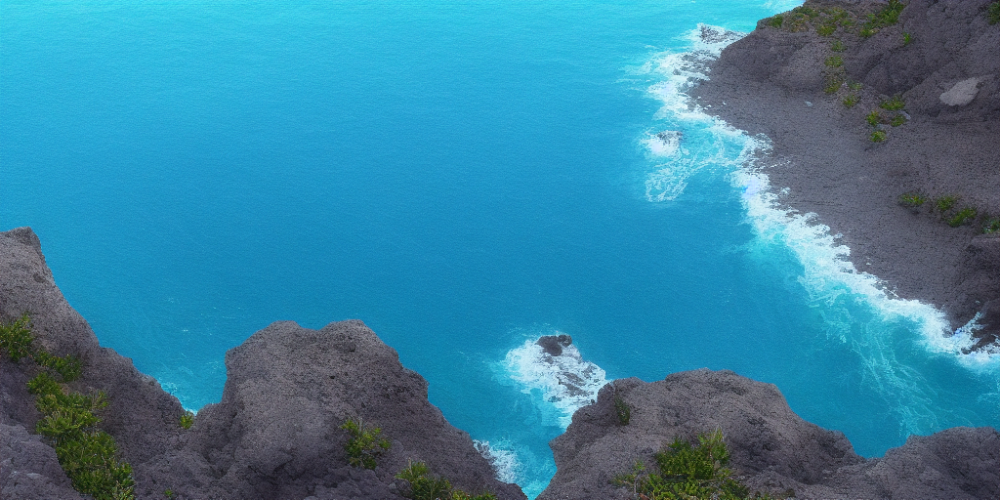
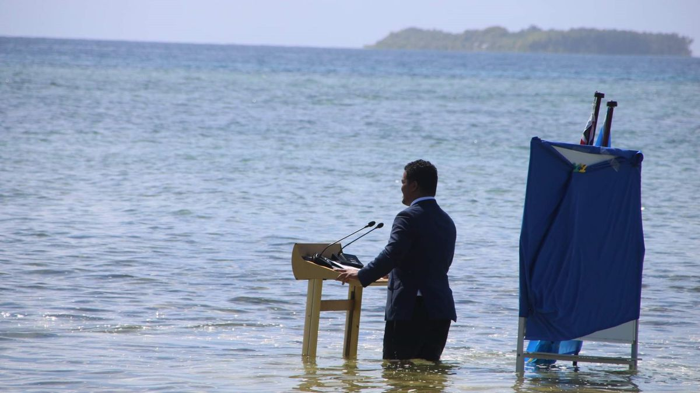
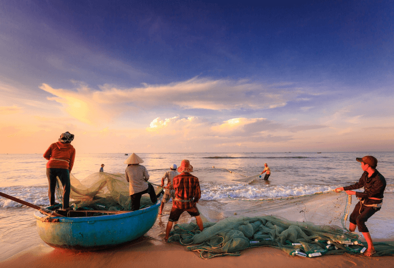

Journée de nettoyage des plages : Organiser une journée de nettoyage des plages peut être un excellent moyen de sensibiliser le public à la pollution marine et d'encourager les gens à prendre des mesures concrètes pour protéger les océans. Les membres de l'association peuvent travailler avec des volontaires pour collecter les déchets sur les plages et les trier pour les recycler ou les éliminer correctement.
 Sorties en mer pour observer la faune marine : Organiser des sorties en mer pour observer les baleines, les dauphins ou les tortues marines peut être un moyen amusant et éducatif de sensibiliser les gens à la richesse de la faune marine. Les membres de l'association peuvent travailler avec des guides expérimentés pour fournir des informations sur les animaux et leur habitat naturel, ainsi que sur les menaces qui pèsent sur leur survie.
Sorties en mer pour observer la faune marine : Organiser des sorties en mer pour observer les baleines, les dauphins ou les tortues marines peut être un moyen amusant et éducatif de sensibiliser les gens à la richesse de la faune marine. Les membres de l'association peuvent travailler avec des guides expérimentés pour fournir des informations sur les animaux et leur habitat naturel, ainsi que sur les menaces qui pèsent sur leur survie.

Conférences sur la protection de l'environnement marin : Organiser des conférences sur la protection de l'environnement marin peut être un moyen efficace d'informer le public sur les enjeux actuels liés à la pollution marine, au changement climatique, à la surpêche et à la destruction des habitats marins. Les membres de l'association peuvent inviter des experts en la matière pour donner des présentations et organiser des débats ouverts à tous.

Ateliers de sensibilisation à la pêche durable : Organiser des ateliers pour apprendre aux gens à pêcher de manière durable peut être un moyen de protéger les océans et les populations de poissons tout en permettant aux gens de continuer à profiter des fruits de la mer.